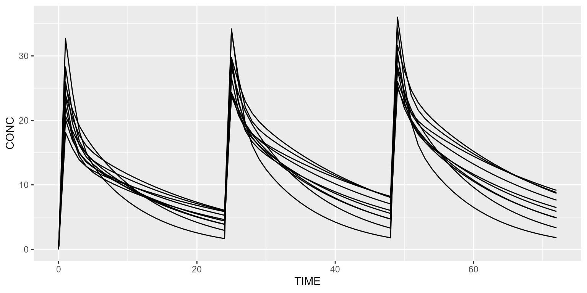
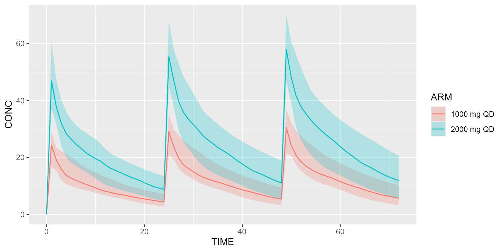

Load model
Load 2-compartment PK model from built-in model library:
model <- model_suite$pk$`2cpt_fo`Create dataset
Create your dataset in CAMPSIS. For instance, let’s give 1000mg QD for 3 days and observe every hour.
Simulate
Simulate this very simple protocol:
## # A tibble: 6 × 20
## ID TIME ARM TVBIO TVKA TVVC TVVP TVQ TVCL BIO KA VC VP
## <int> <dbl> <dbl> <dbl> <dbl> <dbl> <dbl> <dbl> <dbl> <dbl> <dbl> <dbl> <dbl>
## 1 1 0 0 1 1 10 40 20 3 1 0.960 14.0 50.2
## 2 1 1 0 1 1 10 40 20 3 1 0.960 14.0 50.2
## 3 1 2 0 1 1 10 40 20 3 1 0.960 14.0 50.2
## 4 1 3 0 1 1 10 40 20 3 1 0.960 14.0 50.2
## 5 1 4 0 1 1 10 40 20 3 1 0.960 14.0 50.2
## 6 1 5 0 1 1 10 40 20 3 1 0.960 14.0 50.2
## # ℹ 7 more variables: Q <dbl>, CL <dbl>, CONC <dbl>, CONC_ERR <dbl>,
## # A_ABS <dbl>, A_CENTRAL <dbl>, A_PERIPHERAL <dbl>Plot results
Plot these results:
spaghettiPlot(results, "CONC")
A shaded plot may also be used:
shadedPlot(results, "CONC")Simulate 2 arms
We can also simulate two different treatment arms. Say the first arm receives 1000mg QD and the second arm 2000mg QD. This can be implemented as follows:
# First treatment arm
arm1 <- Arm(subjects=50, label="1000 mg QD") %>%
add(Bolus(time=0, amount=1000, ii=24, addl=2)) %>%
add(Observations(times=seq(0,72, by=1)))
# Second treatment arm
arm2 <- Arm(subjects=50, label="2000 mg QD") %>%
add(Bolus(time=0, amount=2000, ii=24, addl=2)) %>%
add(Observations(times=seq(0,72, by=1)))
dataset <- Dataset() %>% add(c(arm1, arm2))
results <- model %>% simulate(dataset, seed=1)
shadedPlot(results, "CONC", colour="ARM")
Going further
We invite you to check out the other vignettes. Have fun with CAMPSIS!